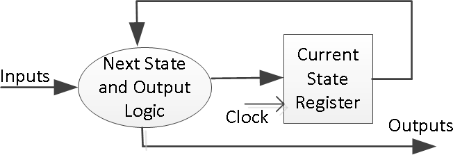
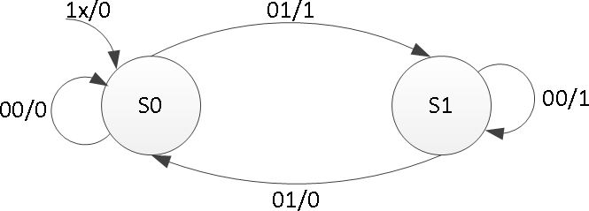
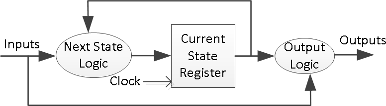
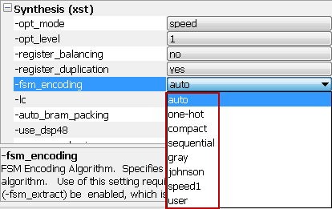
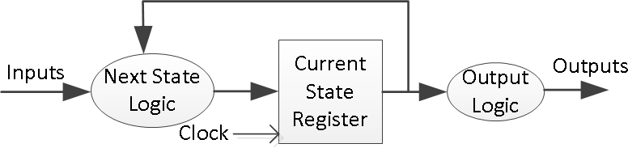
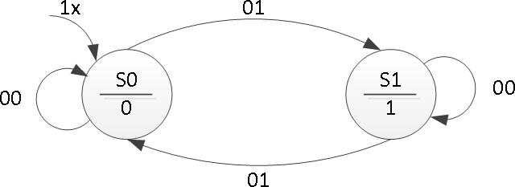
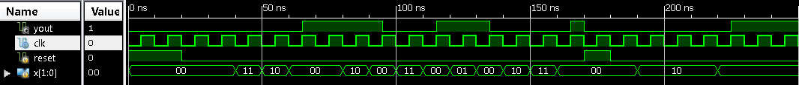
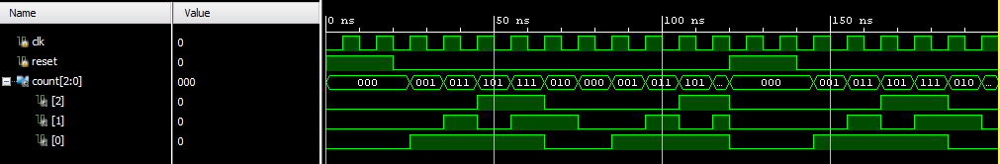

有限状态机
有限状态机简介
有限状态机 (FSM) 是许多数字系统中用来控制系统和数据流路径行为的时序电路。FSM 的实例包括控制单元和时序。本实验介绍了两种类型的 FSM（Mealy 和 Moore）的概念，以及开发此类状态机的建模方式。请参阅 Vivado 教程，了解如何使用 Vivado 工具创建项目和验证数字电路。
实验目标
在本次实验中，你将会学到：
- 对 Mealy FSMs 建模
- 对 Moore FSMs 建模
Mealy FSM（米利型有限状态机）
有限状态机（FSM）或称简单状态机用于设计计算机程序和时序逻辑电路。它被设想为抽象机器，可以处于有限数量的用户定义状态之一。机器一次只能处于一种状态; 它在任何给定时间所处的状态称为当前状态。当由触发事件或条件启动时，它可以从一种状态改变为另一种状态; 这称为过渡。特定 FSM 由其状态列表和每个转换的触发条件定义。
在现代社会中的许多设备中可以观察到状态机的踪影，这些设备根据发生的事件序列执行预定的动作序列。简单的例子是自动售货机，当存放硬币的金额达到商品价格时分配产品；电梯在把乘客送达楼上后才会下降；交通灯按一定的时间改变信号来控制车流；以及需要输入一串正确的数字才能打开的组合锁。
状态机使用两种基本类型建模--Mealy 和 Moore。在 Mealy 机器中，输出取决于当前状态和当前输入。在 Moore 机器中，输出仅取决于当前状态。
Mealy 型状态机的一般模型由组合过程电路和状态寄存器组成，组合过程电路生成输出和下一个状态，状态寄存器保存当前状态，如下图所示。状态寄存器通常建模为 D 触发器。状态寄存器必须对时钟边缘敏感。其他块可以使用 always 过程块或 always 过程块和 dataflow 建模语句的混合来建模；always 过程块必须对所有输入敏感，并且必须为每个分支定义所有输出，以便将其建模为组合块。两段式 Mealy 机器可以表示为

下面是奇偶校验校验机的状态图和相关模型：

module mealy_2processes(input clk, input reset, input x, output reg parity); reg state, nextstate; parameter S0=0, S1=1; always @(posedge clk or posedge reset) // always block to update state if (reset) state <= S0; else state <= nextstate;
always @(state or x) // always block to compute both output & nextstate begin parity = 1'b0; case(state) S0: if(x) begin parity = 1; nextstate = S1; end else nextstate = S0; S1: if(x) nextstate = S0; else begin parity = 1; nextstate = S1;
end
end default: nextstate = S0; endcase
endmodule
三段式 Mealy 机器的图示及其建模如下：

module mealy_3processes(input clk, input reset, input x, output reg parity); reg state, nextstate; parameter S0=0, S1=1; always @(posedge clk or posedge reset) // always block to update state if (reset) state <= S0; else state <= nextstate; always @(state or x) // always block to compute output begin parity = 1'b0; case(state) S0: if(x) parity = 1; S1: if(!x) parity = 1; endcase end always @(state or x) // always block to compute nextstate begin nextstate = S0; case(state) S0: if(x) nextstate = S1; S1: if(!x) nextstate = S1; endcase end endmodule
状态分配可以使用独热码（one – hot code），二进制编码，格雷码以及其他编码。通常，综合工具将确定状态分配的编码，但用户也可以通过更改综合属性来强制特定编码，如下所示。状态分配编码将对状态寄存器中使用的位数产生影响；独热编码使用最多的位数，但解码非常快，二进制编码使用最少的位数，但解码较长。
 v
使用三段式 Mealy 状态机的实现一个序列检测器
实验要求
Mealy 状态机有一个输入（ain）和一个输出（yout）。当且仅当接收到的 1 的总数可被 3 整除时，输出为 1（提示：0 也算被 3 整除，但是，在复位周期中不把计数器归为 0，复位信号过后把计数器归 0——参考模拟波形时间= 200。设计一个 testbench 并通过 behavioral simulation 验证模型。使用 SW15 作为时钟输入，SW0 作为输入，BTNU 按钮作为电路的复位输入，LED7：LED4 上的 1s 计数和作为 yout 输出的 LED0。完成设计流程，生成比特流，并将其下载到 Basys3 或 Nexys4 DDR 板。验证功能。
实验步骤
-
打开 Vivado 并创建一个空工程并命名为 lab10_1。
-
创建并添加使用 SW15 作为时钟输入，SW0 作为输入，BTNU 按钮作为电路的复位输入，LED7：LED4 上的 1s 计数和作为 yout 输出的 LED0。
-
编写仿真文件来验证代码的正确
-
在工程中添加适当的管脚约束的 XDC 文件，并加入相关联的管脚，使用 SW15 作为时钟输入，SW0 作为输入，BTNU 按钮作为电路的复位输入，LED7：LED4 上的 1s 计数和作为 yout 输出的 LED0。
-
综合，实现设计。
-
生成比特流文件，下载到 Nexys4 开发板上，验证功能。
参考代码和分析
module lab10_1( input clk, input rst, input ain, output reg [3:0]count, output reg yout ); parameter s0=0, s1=1,s2=2; reg [1:0]state,nextstate; always@(posedge clk or posedge rst) begin if(rst) begin state<=s0; count<=4'b0; end else begin state<=nextstate; if(ain) count<=count+1; end end
always@(*)
begin
yout=0;
case(state)
s0:if(!ain)
yout=1;
s2:if(ain)
yout=1;
endcase
end
always@(*)
begin
case(state)
s0:if(ain)
nextstate=s1;
else
nextstate=s0;
s1:if(ain)
nextstate=s2;
else
nextstate=s1;
s2:if(ain)
nextstate=s0;
else
nextstate=s2;
endcase
end
endmodule 米利型的输出是和当前状态以及输入都相关的，所以这里是这样的情况。但是如果是摩尔型的话输入只与当前状态相关，之后也会有介绍。
Moore FSM（摩尔型有限状态机）
Moore 型有限状态机的一般模型如下所示。其输出由状态寄存器块生成。使用当前输入和当前状态确定下一状态。这里的状态寄存器也使用 D 触发器建模。通常，Moore 机器使用三个块来描述，其中一个块必须是顺序的，另外两个块可以使用 always 块或 always 和 dataflow 建模结构的组合来建模。
 v
以下是使用 Moore 型有限状态机实现的奇偶校验器的状态图。与之关联模型如下所示。
 v
module moore_3processes(input clk, input reset, input x, output reg parity); reg state, nextstate; parameter S0=0, S1=1; always @(posedge clk or posedge reset) // always block to update state if (reset) state <= S0; else state <= nextstate;
always @(state) // always block to compute output begin case(state) S0: parity = 0; S1: parity = 1; endcase end always @(state or x) // always block to compute nextstate begin nextstate = S0; case(state) S0: if(x) nextstate = S1; S1: if(!x) nextstate = S1; endcase end endmodule
在本例中，输出块很简单，可以使用 dataflow 建模构造进行建模。可以使用以下代码代替 always 块。您还需要将输出类型从 reg 更改为 wire。
assign parity = (state==S0) ? 1'b0: 1'b1;
使用三段式 Moore 状态机的实现一个序列检测器
实验要求
Moore 状态机有一个输入（ain）和一个输出（yout）。当且仅当接收到的 1 的总数可被 3 整除时，输出为 1（提示：0 也算被 3 整除，但是，在复位周期中不把计数器归为 0，复位信号过后把计数器归 0——参考模拟波形时间= 200。设计一个 testbench 并通过 behavioral simulation 验证模型。使用 SW15 作为时钟输入，SW0 作为输入，BTNU 按钮作为电路的复位输入，LED7：LED4 上的 1s 计数和作为 yout 输出的 LED0。完成设计流程，生成比特流，并将其下载到 Basys3 或 Nexys4 DDR 板。验证功能。
实验步骤
-
打开 Vivado 并创建一个空工程并命名为 lab10_2。
-
创建并添加使用 SW15 作为时钟输入，SW0 作为输入，BTNU 按钮作为电路的复位输入，LED7：LED4 上的 1s 计数和作为 yout 输出的 LED0。
-
编写仿真文件来验证代码的正确
-
在工程中添加适当的管脚约束的 XDC 文件，并加入相关联的管脚，使用 SW15 作为时钟输入，SW0 作为输入，BTNU 按钮作为电路的复位输入，LED7：LED4 上的 1s 计数和作为 yout 输出的 LED0。
-
综合，实现设计。
-
生成比特流文件，下载到 Nexys4 开发板上，验证功能。
参考代码和分析
module lab10_2( input clk, input rst, input ain, output reg [3:0]count, output reg yout ); parameter s0=0, s1=1,s2=2; reg [1:0]state,nextstate; always@(posedge clk or posedge rst) begin if(rst) begin state<=s0; count<=4'b0; end else begin state<=nextstate; if(ain) count<=count+1; end end always@() begin case(state) s0:yout=1; default:yout=0; endcase end always@() begin case(state) s0:if(ain) nextstate=s1; else nextstate=s0; s1:if(ain) nextstate=s2; else nextstate=s1; s2:if(ain) nextstate=s0; else nextstate=s2; endcase end endmodule
摩尔型相较米利型输出的状态只与输入相关
扩展实验内容
扩展实验 1
使用三段式 Moore 状态机或者 Mealy 状态机实现一个序列检测器。 Moore 状态机有两个输入（ain [1:0]）和一个输出（yout）。除非出现以下输入序列之一，否则输出将从 0 开始并保持为常量值：
- 输入序列 ain [1:0] = 01,00 使输出变为 0
- 输入序列 ain [1:0] = 11,00 使输出变为 1
- 输入序列 ain [1:0] = 10,00 使输出切换。
实验要求
打开 Vivado 并创建一个空工程并命名为 lab10_kuozhan1。设计一个 testbench（类似于下面显示的波形）并通过 behavioral simulation 验证模型。使用 SW15 作为时钟输入，SW1-SW0 作为 ain [1:0]输入，BTNU 按钮作为电路的复位输入，LED0 作为 yout 输出。完成设计流程，生成比特流，并将其下载到 Basys3 或 Nexys4 DDR 板。验证功能。
仿真示意图如下：

扩展实验 2
使用 ROM 设计一个特定的计数计数器（下面列出的计数序列）来开发一个 Mealy 状态机。
实验要求
打开 Vivado 并创建一个空工程并命名为 lab10_kuozhan2。设计一个 testbench 并通过 behavioral simulation 验证模型。使用 SW15 作为时钟输入，BTNU 按钮作为电路的复位输入，LED2：LED0 作为计数器的计数输出。完成设计流程，生成比特流，并将其下载到 Basys3 或 Nexys4 DDR 板。验证功能。
计数序列是：000, 001, 011, 101, 111, 010 (repeat) 000, …

总结
在这个实验中，您学习了 Mealy 和 Moore 状态机建模方法。还设计并实现了序列检测器、序列生成器和编码转换器，实践了两段和三段式的状态机。